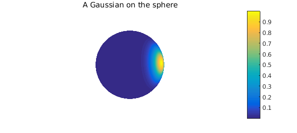
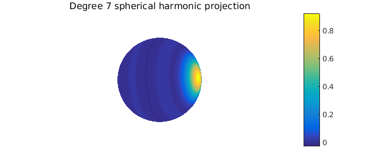
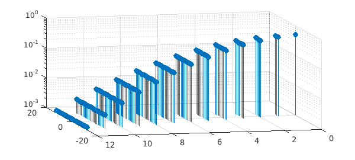

1. Introduction
Spherical harmonics are the spherical analogue of trigonometric polynomials on $[-\pi,\pi)$. The degree $\ell\geq 0$, order $m$ ($-\ell \leq m \leq m$) spherical harmonic is denoted by $Y_{\ell}^{m}(\lambda,\theta)$, and can be expressed (in real form) as [1, Sec. 14.30]: $$ \sqrt{2} a_{\ell}^{m} P_{\ell}^{m}(\cos\theta)\cos(m\lambda),\quad m > 0 $$ and $$ a_{\ell}^{0} P_{\ell}(\cos\theta),\quad m=0 $$ and $$ \sqrt{2} a_{\ell}^{|m|} P_{\ell}^{|m|}(\cos\theta)\sin(m\lambda),\quad m < 0, $$ where $a_{\ell}^{k}$, $0\leq k \leq \ell$, is a normalization factor and $P_{\ell}^{k}$, $0\leq k \leq \ell$, is the degree $\ell$, order $k$ associated Legendre function [1, Ch. 14]. Here, we have used the following spherical coordinate parameterization for a point ${\bf x} = (x,y,z)$ on the unit sphere: $$ x = \cos\lambda\sin\theta,~~ y = \sin\lambda\sin\theta,~~ z = \cos\theta, $$ with $-\pi \leq \lambda \leq \pi$ and $0 \leq \theta \leq \pi$.
Spherical harmonics can be derived by solving the eigenvalue problem for the surface Laplace (Laplace-Beltrami) operator on the sphere; for an alternative derivation see [2, Ch. 2]. The Laplace-Beltrami operator can be expressed in the spherical coordinates defined above as $$ \Delta = \frac{\partial^2}{\partial \theta^2} - \frac{\cos\theta}{\sin\theta}\frac{\partial}{\partial\theta} + \frac{1}{\sin^2\theta}\frac{\partial^2}{\partial\lambda^2}. $$ The spherical harmonics are eigenfunctions of this operator, with the property that for $\ell \geq 0$, $$ \Delta Y_{\ell}^{m} = -\ell(\ell + 1) Y_{\ell}^{m},\;\; -m\leq \ell \leq m. $$
Spherical harmonics can also be expressed in Cartesian form as polynomials of $x$, $y$, and $z$ [2, Ch. 2]. When viewed in this way, one finds that these polynomials all satisfy Laplace's equation in ${\bf R}^3$, i.e., they are harmonic. This is where the name spherical harmonics originates and it was first used by Thomson (Lord Kelvin) and Tait in their classic book Treatise on Natural Philosophy [3, Appendix B].
If the normalization factors $a_{\ell}^{k}$, $\ell \geq 0$, $0 \leq k \leq \ell$ in (1) are chosen as $$ a_{\ell}^{k} = \sqrt{\frac{(2\ell+1)(\ell-k)!}{4\pi(\ell+k)!}}, $$ the set of spherical harmonics ${Y_{\ell}^{m}}$, $\ell=0,1,\ldots$, $m = -\ell,\ldots,\ell$, is orthonormal, i.e., $$ \int_{S^2} Y_{\ell}^{m}Y_{\ell'}^{m'}\,dS = \int_{-\pi}^{\pi} \int_0^{\pi} Y_{\ell}^{m}(\lambda,\theta)Y_{\ell'}^{m'}(\lambda,\theta) \sin\theta\,d\theta d\lambda = \delta_{\ell\ell'}\delta_{mm'}, $$ where $\delta_{st}=1$ for $s=t$ and $\delta_{st}=0$ otherwise. Furthermore, it can be shown that they form a complete orthonormal basis for the set of $L^{2}$ integrable functions on the sphere, denoted by $L^{2}({\bf S}^2)$ [2, Sec. 2.8]. Thus, for any $f\in L^{2}({\bf S}^2)$, we have $$ f(\lambda,\theta) = \sum_{\ell=0}^{\infty}\sum_{m=-\ell}^\ell c_{\ell}^{m} Y_{\ell}^{m}(\lambda,\theta), \quad\quad (1) $$ where $$ c_{\ell}^m = \int_{S^2} f Y_{\ell}^m\,dS = \int_{-\pi}^{\pi} \int_0^{\pi} f(\lambda,\theta)Y_{\ell}^m(\lambda,\theta)\,d\theta d\lambda, \quad\quad (2) $$ and equality in (1) is understood in the mean-square sense. Truncating the outer sum of (1) to $N$ gives the degree $N$ spherical harmonic projection of $f$. This is the best degree $N$ approximation of $f$ in the $L^2$ norm on the sphere among all harmonic polynomials in ${\bf R}^3$ of degree $N$ restricted to the sphere [2, Ch. 4]. A spherical harmonic projection gives essentially uniform resolution of a function over the sphere in a similar way to a trigonometric (Fourier) projection of a $2\pi$ periodic function in one dimension.
2. Spherical harmonics in Spherefun
While spherical harmonic expansions have many properties that make them mathematically appealing for representing functions on the sphere, Spherefun does not rely on them. Instead, it combines the double Fourier sphere method with a low rank technique (based on a structure-preserving Gaussian elimination procedure) for approximating functions on the sphere to approximately machine precision [4]. This hybrid method allows for fast, highly adaptive discretizations based on the FFT, with no setup cost. While fast spherical harmonic transforms are available [5], the precomputation cost for these algorithms is currently too high to be used as the primary technology underlying approximations in Spherefun.
Nevertheless, given the importance of spherical harmonics in many applications, Spherefun allows one to compute with spherical harmonics. In this and the next four sections we discuss some properties of spherical harmonics and show how Spherefun can be used to easily verify them.
The command sphharm constructs a spherical harmonic of a given degree and order. For example, $Y_{17}^{13}$ can be constructed and plotted as follows:
Y17 = spherefun.sphharm(17,13); plot(Y17), colorbar, axis off
We can verify that this function is an eigenfunction of the surface Laplacian with eigenvalue $-\ell(\ell+1) = -17(18)$:
norm(laplacian(Y17)-(-17*18)*Y17)
ans =
0
We can also verify the orthonormality of spherical harmonics on the sphere using sum2, which computes the surface integral of a function over the sphere:
Y13 = spherefun.sphharm(13,7); sum2(Y13.*Y17) sum2(Y13.*Y13) sum2(Y17.*Y17)
ans =
3.054914743159143e-16
ans =
1.000000000000000
ans =
0.999999999999994
Spherical harmonics become increasing oscillatory as their degree increases, similarly to trigonometric polynomials. Here is a plot of the real spherical harmonics $Y_{\ell}^{m}$, with $\ell=0,\ldots,4$ and $0\leq m \leq \ell$, illustrating this behavior. Black contour lines have been included indicating the zero curves of each spherical harmonic, which highlights their transition from positive to negative values.
N = 4;
for l = 0:N
for m = 0:l
Y = spherefun.sphharm(l,m);
subplot(N+1,N+1,l*(N+1)+m+1), plot(Y), hold on
contour(Y,[0 0],'k-'), axis off, hold off
end
end
The negative order real spherical harmonics are similar to the positive order ones, differing only by a rotation about the polar axis.
3. Computing spherical harmonic coefficients
The cost of computing all the spherical harmonic coefficients up to degree $N$ of a function directly using an approximation of (2) scales like $O(N^4)$. If $f$ is of low rank, then the coefficients can be obtained in $O(N^3)$ operations using a fast multiplication algorithm and the \verb|sum2| command in Spherefun. As noted above, fast $O(N^2\log N)$ algorithms are available for this task [5], but these are not yet implemented in Spherefun.
As an example, consider the restriction of a Gaussian in ${\bf R}^3$, $$ f(x,y,z) = \exp\left(-\frac{(x-x_0)^2 + (y-y_0)^2 + (z-z_0)^2}{\sigma^2}\right), $$ to ${\bf S}^2$. Here, we center the Gaussian at a random point ${\bf x}_0 = (x_0,y_0,z_0)\in{\bf S}^2$, i.e., $x_0^2+y_0^2+z_0^2=1$, and choose $\sigma = 0.4$.
rng(10)
x0 = 2*rand-1; y0 = sqrt(1-x0^2)*(2*rand-1); z0 = sqrt(1-x0^2-y0^2);
sig = 0.4;
f = spherefun(@(x,y,z) exp(-((x-x0).^2+(y-y0).^2+(z-z0).^2)/sig^2) )
clf, plot(f), title('A Gaussian on the sphere'), colorbar, axis off
f =
spherefun object
domain rank vertical scale
unit sphere 23 0.99

The numerical rank of this function is only 23, so we consider it to be a low rank function. The spherical harmonic coefficients of $f$ up to degree 12 can be computed as follows:
N = 12; k = 1;
coeffs = zeros((N+1)^2,3);
for l = 0:N
for m = -l:l
Y = spherefun.sphharm(l,m);
coeffs(k,1) = sum2(f.*Y);
coeffs(k,2:3) = [l m];
k = k + 1;
end
end
Since the Gaussian is analytic, the spherical harmonic coefficients decay exponentially with increasing $\ell$ [2], as the following figure illustrates:
stem3(coeffs(:,2),coeffs(:,3),abs(coeffs(:,1)),'filled'), ylim([-N N])
set(gca,'ZScale','log'), set(gca,'Xdir','reverse'), view([-13 18])
xlabel('$\ell$','Interpreter','Latex'), ylabel('m'), zlabel('|coeffs|')
Here is the degree 7 spherical harmonic projection of the Gaussian function given above.
fproj = spherefun([]);
k = 1;
for l = 0:7
for m = -l:l
fproj = fproj + coeffs(k,1)*spherefun.sphharm(l,m);
k = k + 1;
end
end
plot(fproj), title('Degree 7 spherical harmonic projection')
colorbar, axis off

As mentioned earlier, this is the best $L^2$ approximation of $f$ of degree 7 on the sphere. Here is what the error between $f$ and the projection looks like, followed by its $L^2({\bf S}^2)$ norm.
plot(f-fproj), title('Error in the spherical harmonic projection')
colorbar, colorbar, axis off
norm(f-fproj)
ans = 0.038297655789218
4. Zonal kernels and the Funk-Hecke formula
A kernel $\Psi:{\bf S}^2 \times {\bf S}^2 \rightarrow {\bf R}$ is called a zonal kernel on the sphere if for any $\mathbf{x},\mathbf{y}\in{\bf S}^2$, it can be expressed as a function of the inner product of $\mathbf{x}$ and $\mathbf{y}$, i.e., $$ \Psi(\mathbf{x},\mathbf{y}) = \psi(\mathbf{x}^T\mathbf{y}), $$ where $\psi:[-1,1]\rightarrow\mathbf{R}$. For example, the Gaussian kernel $$ \Psi(\mathbf{x},\mathbf{y}) = \exp\left(-\frac{\|\mathbf{x}-\mathbf{y}\|_2^2}{\sigma^2}\right) $$ restricted to the sphere is a zonal kernel since $$ \|\mathbf{x}-\mathbf{y}\|_2 = \sqrt{2-2\mathbf{x}^T\mathbf{y}} $$ for any $\mathbf{x},\mathbf{y}\in{\bf S}^2$. So, for the Gaussian, $$ \psi(t) = \exp\left(-\frac{2(1-t)}{\sigma^2}\right). \quad (3) $$
Zonal kernels have the beautiful property that, for a fixed $\mathbf{y}\in{\bf S}^2$, their spherical harmonic coefficients satisfy $$ c_{\ell}^{m} = \int_{S^2} \psi(\mathbf{x}^T\mathbf{y})Y_{\ell}^{m}(\mathbf{x})dS = \frac{4\pi a_{\ell}}{2\ell+1} Y_{\ell}^{m}(\mathbf{y}), \quad (4) $$ where $a_{\ell}$ are the coefficients in the Legendre series expansion of $\psi$, i.e., $$ \psi(t) = \sum_{\ell=0}^{\infty} a_{\ell} P_{k}(t),\;\hbox{where}\; a_{\ell} = \frac{2\ell+1}{2}\int_{-1}^{1}\psi(t)P_{\ell}(t)dt. $$ Here, $P_{\ell}$ denotes the Legendre polynomial of degree $\ell$. This property is known as the Funk-Hecke formula and holds for any $\psi \in L^1(-1,1)$ [2, Sec. 2.5].
Equation (4) implies that, for a fixed $\ell$, the values $c_{\ell}^{m}/Y_{\ell}^{m}(\mathbf{y})$, for $-\ell \leq m \leq \ell$, are all equal. We can verify this for the Gaussian by taking the spherical harmonic coefficients computed previously and scaling them by the appropriate value of $Y_{\ell}^{m}(\mathbf{x}_0)$.
k = 1;
zonalCoeffs = zeros((N+1).^2,1);
for l = 0:N
for m = -l:l
Y = spherefun.sphharm(l,m);
zonalCoeffs(k) = coeffs(k,1)/Y(x0,y0,z0);
k = k+1;
end
end
stem3(coeffs(:,2),coeffs(:,3),abs(zonalCoeffs),'filled')
set(gca,'ZScale','log'), set(gca,'Xdir','reverse'), view([-13 18])
xlabel('$\ell$','Interpreter','Latex'), ylabel('m'), zlabel('|coeffs|')

Moreover, we can check the accuracy of the computed spherical harmonic coefficients by using the Legendre expansion for $\psi$ in (3). The coefficients in this expansion are computed in [6] and are given by $$ a_{\ell} = \frac{\sqrt{\pi}}{2}\sigma e^{-\sigma^2/2}(2\ell+1)I_{\ell+1/2}(2/\sigma^2), $$ where $I_{\nu}$ denotes the modified Bessel function of the first kind of order $\nu$. The maximum error in the computed spherical harmonic coefficients of the Gaussian in Section 3 is then
k = 1;
coeffsExact = zeros((N+1).^2,1);
for l = 0:N
for m = -l:l
Y = spherefun.sphharm(l,m);
a = sqrt(pi)/2*sig*exp(-2/sig^2)*(2*l+1)*besseli(l+1/2,2/sig^2);
coeffsExact(k) = 4*pi/(2*l+1)*a*Y(x0,y0,z0);
k = k+1;
end
end
max(abs(coeffs(:,1)-coeffsExact))
ans =
3.386180225106727e-15
5. The Addition Theorem
A related result to the Funk-Hecke formula is the Addition Theorem for spherical harmonics [2, Sec 2.2]. This theorem says that for any $\mathbf{x},\mathbf{y}\in{\bf S}^2$ and all $\ell=0,1,\ldots,$ $$ \frac{4\pi}{2\ell + 1} \sum_{m=-\ell}^{\ell} Y_{\ell}^m(\mathbf{x})Y_{\ell}^m(\mathbf{y}) = P_{\ell}(\mathbf{x}^{T}\mathbf{y}), $$ where $P_{\ell}$ is the Legendre polynomial of degree $\ell$. The left-hand side of this equation for $\ell = 14$ can be constructed as follows:
rng(13)
x0 = 2*rand-1; y0 = sqrt(1-x0^2)*(2*rand-1); z0 = sqrt(1-x0^2-y0^2);
lhs = spherefun([]);
l = 14;
for m=-l:l
Y = spherefun.sphharm(l,m);
lhs = lhs + Y.*Y(x0,y0,z0);
end
lhs = 4*pi/(2*l+1)*lhs;
plot(lhs), colorbar, axis off
The right-hand side can be constructed using legpoly:
p15 = legpoly(l); t = @(x,y,z) (x*x0 + y*y0 + z*z0); rhs = spherefun(@(x,y,z) feval(p15,t(x,y,z))); plot(rhs), colorbar, axis off
Is the theorem correct? At least in this case, yes!
norm(lhs-rhs)
ans =
1.105184572534054e-14
6. Platonic solids
Certain low order spherical harmonics can be combined so that they have the same rotational symmetries as certain platonic solids. These combinations of spherical harmonics play a key role in the linear stability analysis of partial differential equations in spherical geometries; see, for example, the work of Busse on thermal convection in spherical shells [7]. The combination with tetrahedral symmetry is given by
Y = spherefun.sphharm(3,2); plot(Y), hold on, contour(Y,[0.1 0.1],'k-'), axis off, hold off
The combination with octahedral symmetry is given by
Y = spherefun.sphharm(4,0) + sqrt(5/7)*spherefun.sphharm(4,4); plot(Y), hold on, contour(Y,[0 0],'k-'), axis off, hold off
And the combination with icosahedral symmetry is given by
Y = spherefun.sphharm(6,0) + sqrt(14/11)*spherefun.sphharm(6,5); plot(Y), hold on, contour(Y,[0 0],'k-'), axis off, hold off
References
[1] F. W. Olver, D. W. Lozier, R. F. Boisvert, and C. W. Clark, NIST Handbook of Mathematical Functions, Cambridge University Press, 2010.
[2] K. Atkinson and W. Han, Spherical Harmonics and Approximations on the Unit Sphere: An Introduction, Lecture Notes in Mathematics, Springer, 2012.
[3] W. Thomson and P. G. Tait. Treatise on Natural Philosophy, 2nd ed., Vol. 1, Cambridge: At the University press, 1888.
[4] A. Townsend, H. Wilber, and G. B. Wright, Computing with functions in polar and spherical geometries I. The sphere, SIAM J. Sci. Comp., to appear in 2016.
[5] M. Tygert, Fast algorithms for spherical harmonic expansions, III, J. Comput. Phys., 229 , 6181-6192, 2010.
[6] S. Hubbert and B. Baxter, Radial basis functions for the sphere, Progress in Multivariate Approximation, v. 137 of the International Series of Numerical Mathematics, Birkhaeuser, 33-47, 2001.
[7] F. H. Busse, Patterns of convection in spherical shells. J. Fluid Mech., 72, 67-85, 1975.